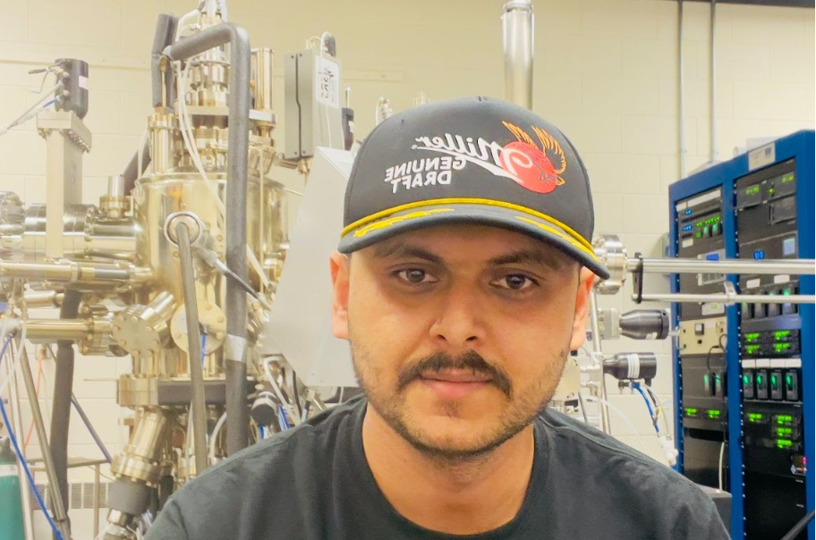

Aabiskar Subedi

I am a graduate student in Physics at the University of North Dakota. My research focuses on molecular beam epitaxy, thin film growth, transition metal nitride nanostructures, and surface characterization.
I work with MBE, RHEED, XPS, AFM, XRD, SEM, and thin film growth on silicon substrates.
Portfolio
Metal Nitride Nanowire Growth on Si(110)
Growth of nanostructures using molecular beam epitaxy. Characterization includes RHEED, SEM, AFM, XRD, and XPS.

XPS Analysis
XPS fitting is used to study bonding states, oxidation, and chemical composition in thin film samples.

RHEED Study of Silicon Surface Reconstruction
RHEED is used to monitor surface reconstruction and growth behavior during high-temperature annealing and deposition.

Molecular Beam Epitaxy Thin Film Growth
Thin film and nanostructure growth using MBE under ultra-high vacuum. This work focuses on substrate temperature, flux, nitrogen plasma, RHEED monitoring, and post-growth characterization.